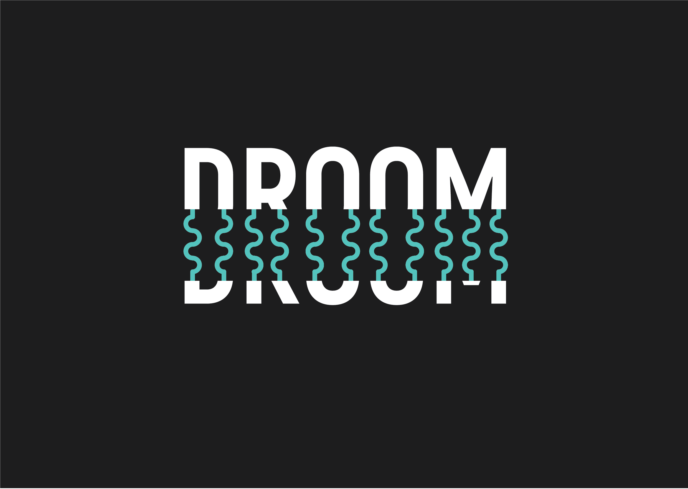
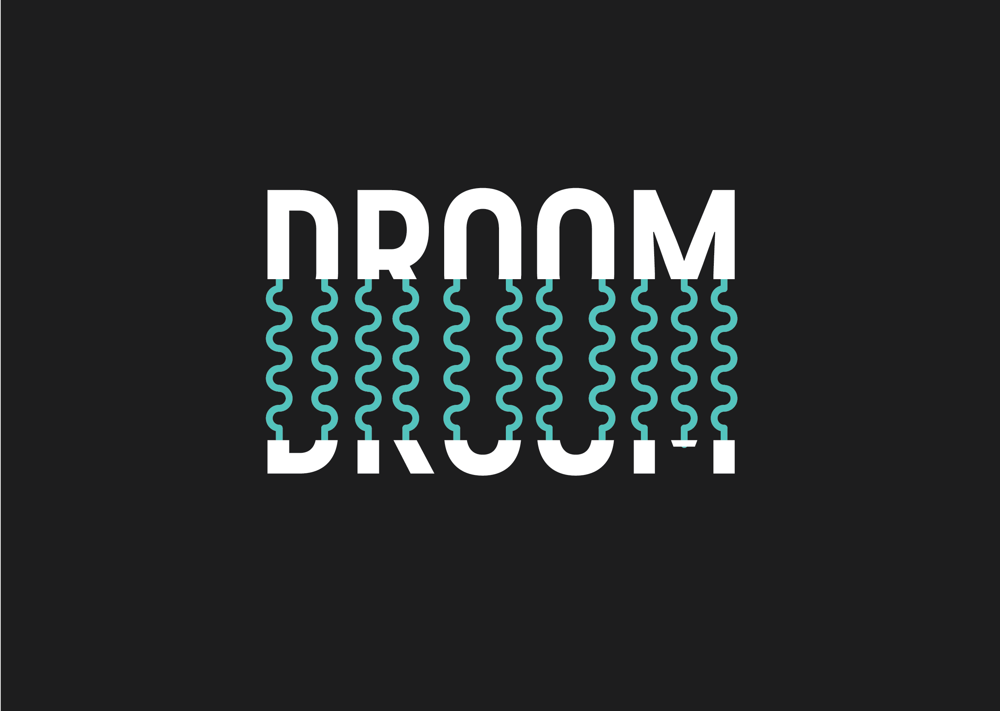
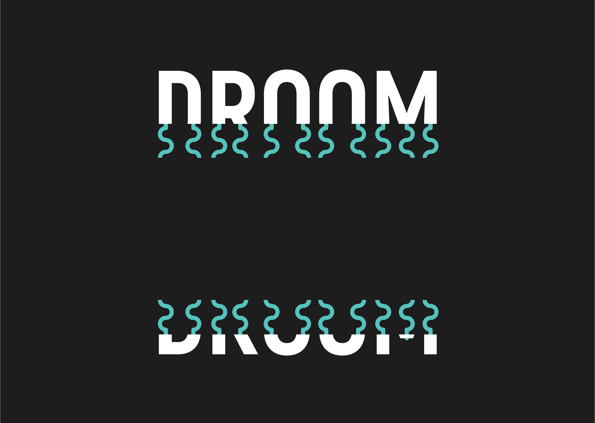

Slierten mist zwerven rond mijn benen. Net zat ik nog in bus 21


Het was warm, zweet parelde langs mijn slapen, mijn zoon sliep. Nu loop ik over een
smal pad langs eindeloos diepe bouwputten.

Een heipaal beukt zich een weg naar het binnenste van mijn oor. Lachende japanners
passeren mij. Een van de japanners verandert in een vrouw. 'Waar is het postkantoor' vraagt de vrouw.
'Dat bestaat niet meer', zeg ik.